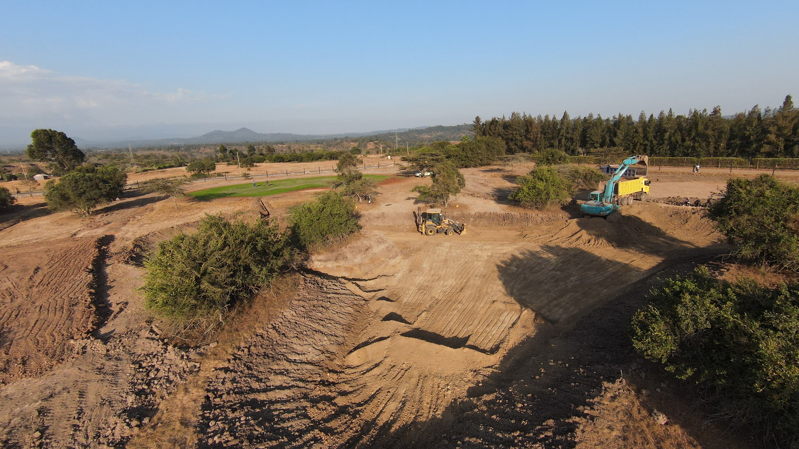
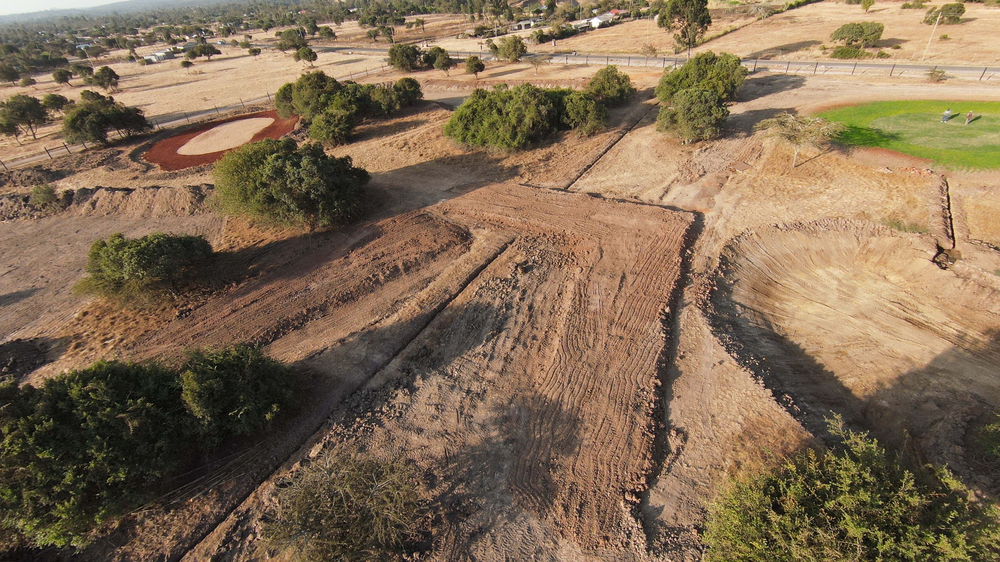
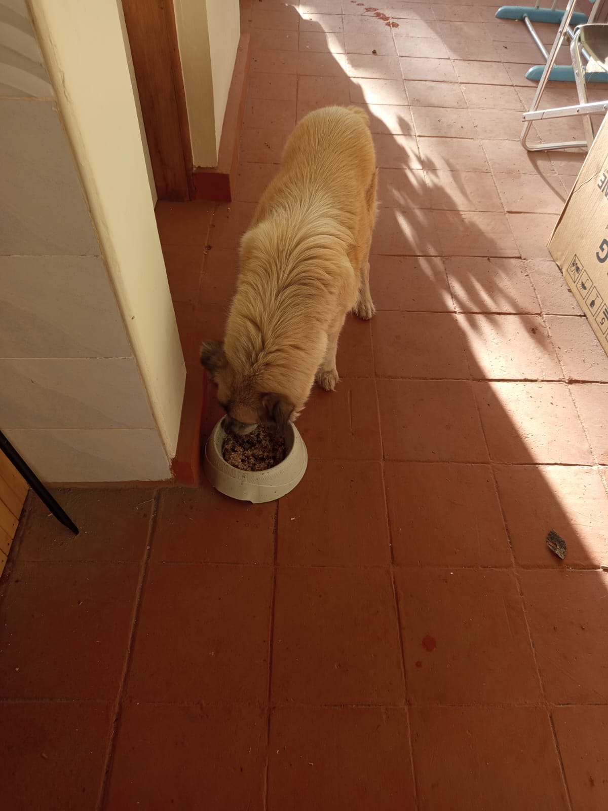
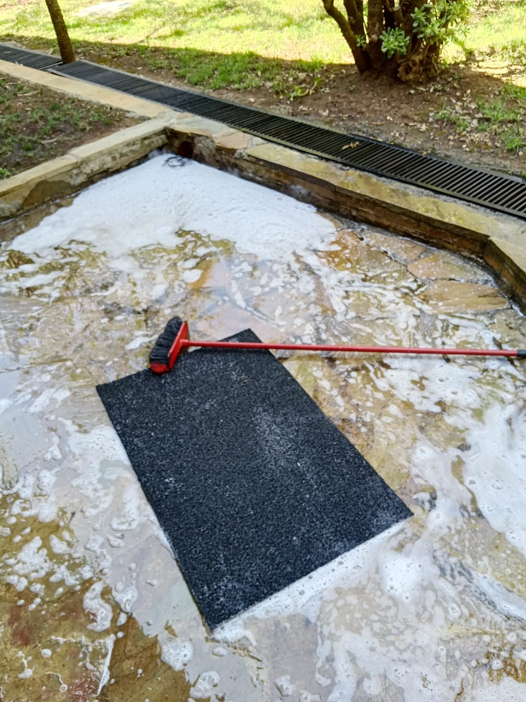

Mucheru World of Golf
- Dam No. 2 Deepening: Deep excavation operations inside the Dam 2 reservoir basin to expand total water retention capacity. Extracted murram was systematically loaded onto tippers and hauled to a central stockpile location near the clubhouse.
- Tee Box Leveling (Tee Box No. 6 & 8): Intensive grading and precision surface leveling conducted across Tee Box 6 and Tee Box 8 to ensure optimal compaction and teeing ground profile.
- Fairway & Uneven Ground Leveling: Front loader grading and soil distribution across uneven fairway terrain to establish consistent ground contours.
- Greens Clearance (Greens 14, 15 & 16): Manual ground clearance crew cleared brush, grass stubble, and loose topsoil across Greens 14, 15, and 16, fully preparing them for surveyor marking and profile setting.
| Equipment / Activity | Duration / Quantity | Unit Rate (KES) | Total Cost (KES) |
|---|---|---|---|
| Excavator (Dam 2 Deep Excavation & Murram Loading) | 8 hrs 30 mins | 8,500 / hr | 72,250 |
| Front Loader (Tee Box Leveling & Soil Grading) | 6 hrs 50 mins | 6,500 / hr | 44,395 |
| Tipper Haulage Trips (Murram to Clubhouse Location) | 35 Trips | 1,000 / trip | 35,000 |
| Total Machinery & Haulage Cost: | KES 151,645 | ||
Milestone Progress Note
Dam 2 excavation achieved substantial basin depth with high-volume murram reclamation. Tee boxes 6 & 8 and greens 14–16 are now advanced to final grading and marking stages.

Dam 2 Basin & Haulage Aerial Overview
Drone perspective showing the excavator loading murram onto the tipper while the loader grades the basin floor.

Dam 2 & Tee Box Panoramic Overview
Wide high-altitude capture showing Dam 2 basin deepening in tandem with adjacent green and tee box grading.

Tee Box & Fairway Aerial Contours
Aerial view highlighting the graded tee box zone, precision leveling lines, and fairway transitions.

Leveled Tee Box Zone Aerial View
Overhead view illustrating earthmoving progress, finished soil leveling, and adjacent course features.

Dam 2 Basin Earthmoving
Ground-level perspective of the loader operating inside the deepening Dam 2 retention basin.

Front Loader Ground Leveling
Front loader actively pushing and leveling mounded earth across uneven sections of the grounds.

Backhoe Grading Tee Box 6
Heavy machinery actively sculpting and flattening the elevated surface for Tee Box 6.

Tee Box Leveling In Progress
Site supervisor guiding machinery operator along the graded tee box perimeter.

Completed Tee Box Leveling Surface
Finished compaction and uniform leveling across the newly prepared tee box platform.

Tee Box Alignment & Uniformity
Longitudinal ground perspective showing smooth grading along the tee box corridor.

Manual Clearance of Greens 14, 15 & 16
Ground crew utilizing hoes and shovels to clear surface vegetation and stones before marking.

Greens Surface Prepared for Marking
Laborers moving wheelbarrows and finalizing clean soil prep across greens ready for surveyor layout.
Chaka Farms
Overseen by Kamandau:
| Session | Morning Yield | Evening Yield | Total Daily Yield |
|---|---|---|---|
| Dairy Milking Yield | 5.0 Litres | 3.0 Litres | 8.0 Litres |
| Goat Kids Milk Ration | 0.5 Litres | 0.5 Litres | 1.0 Litre |
⚠️ Poultry Incident Alert
Missing Livestock: 1 cock (rooster) was reported missing during the daily count. An investigation is underway to establish whether the loss was caused by intrusion/theft or predator wildlife attack.
Overseen by Willy (Training conducted by Willy & Mwangi):
- Manners & Command Training: Kennel manners and the "Paw" command were successfully practiced and reinforced during structured training sessions.
- Off-Leash Morning Exercise: Canine unit conducted morning off-leash field walking and agility runs to promote fitness and environmental exposure.
- Patience & Obedience Routines: Dogs demonstrated high discipline, patience, and immediate responsiveness following all verbal handler commands.
Overseen by Kinoti, Margaret & Monica:
- Maize Stalks Fodder Transfer: Harvested dry maize stalks were collected and transported from farm cultivation fields directly to the livestock feeding area for supplementary fodder.
- Horticulture & Flower Potting: Fresh ornamental flowers transplanted from paper seedling pots into decorative flower vases positioned near the main farmhouse entrance.
- Farm Compound Cleanliness: Ongoing sweeping, yard sanitation, and grounds upkeep managed diligently by Margaret and Monica.

Fodder Transfer to Livestock Area
Kinoti overseeing freshly harvested maize stalks stacked and prepared for livestock feed delivery.

Ornamental Flower Vases
Vibrant potted geraniums and blooms arranged in rustic stone vases enhancing the farmhouse lawn.

Main House Garden Beautification
Watered flower arrangements positioned on stone display plinths across the well-manicured lawn.
Kabete Residence
- Main House Storage Tank Stairs: Final masonry rendering and plastering completed on the concrete access stairs leading to the main water storage tank slab.
- Water Storage Tank Stand Painting: Protective anti-rust primer and black finish paint applied across the elevated structural steel tank tower.
- Glassroom Gutter Installation: PVC rainwater harvesting gutters and brackets fully measured, aligned, and installed along the glassroom roof fascia.
- Ajabu Kennel Repair: Structural maintenance and metal framing repair completed on Ajabu the Golden Retriever's outdoor kennel enclosure.
- Resident Pets Care: Ajabu's regular feeding and attentive dinner feeding for resident cats.
Key Accomplishments Complete
Storage tank access stairs are 100% complete and fully plastered. Water tank steel stand painting and glassroom gutter installation were successfully executed.

Finishing Tank Slab Access Stairs
Mason applying smooth cement plastering across the newly formed concrete steps leading to the tank platform.

Storage Tank Stairs Completed
Final troweling and completed masonry finish on the storage tank staircase flanked by green foliage.

Storage Tank Stand Paint Works
Painter in protective coveralls coating the elevated steel support frame underneath the water tank.

High-Angle Tank Frame Painting
Detailed view of anti-corrosion black coating applied to upper structural braces and tank platform.

Glassroom Gutter Installation
Carpentry and plumbing technicians mounting rainwater collection gutters onto the glassroom canopy.
Fascia & Gutter Alignment
Workers securing gutter channel joints along the perimeter rafters of the glassroom pergola roof.

Ajabu Kennel Structural Repair
Welding and frame alignment completed on Ajabu's wire mesh and steel kennel enclosure.

Ajabu at Mealtime
Ajabu enjoying his nutritious daily feed on the clean veranda tile floor.

Resident Cats Dinner Time
Resident cats feeding together from clean bowls in the evening sunlight at Kabete Residence.
Amani Cottage
- Compound Sweeping: Comprehensive yard sweeping and leaf raking across the entire cottage front and back grounds.
- Two Balconies Scrubbing & Deep Clean: Both balconies washed, scrubbed with detergent, and rinsed clean including outdoor patio flagstones.
- Lawn Irrigation: Sprinkler irrigation set up and operated across the cottage front lawn and tree lines to ensure turf hydration.
- Outside Downstairs Toilets & Drainage Sanitation: Deep cleaning, scrubbing, and sanitizing of downstairs exterior toilet facilities and adjacent stone drainage trenches.
.jpeg)
Yard Sweeping & Debris Raking
Grounds rake and collection piles prepared for full cottage compound sweeping.

Lawn Sprinkler Irrigation
Active sprinkler misting and watering lush turf under cottage mature shade trees.

Balcony No. 1 Detergent Scrubbing
Soap foam and brush scrubbing of exterior natural stone balcony patio outside sliding doors.

Balcony No. 2 Cleaning & Setup
Washed flagstone balcony porch, stepladder, bucket, and spotless log cabin exterior.

Exterior Timber & Window Care
Stepladder positioning along cottage timber wall and chimney stonework for elevated cleaning.

Downstairs Patio & Trench Washing
Detergent wash of outside downstairs toilet threshold and perimeter drainage inlet.

Drainage Grates & Flagstone Patio
Pristine washed drainage channel grates and clean flagstone patio following deep cleaning.